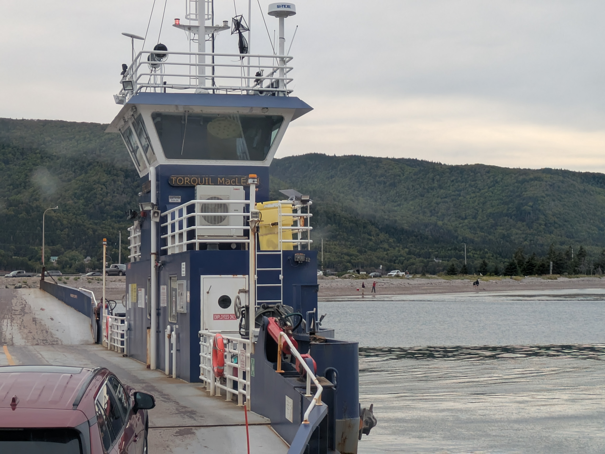
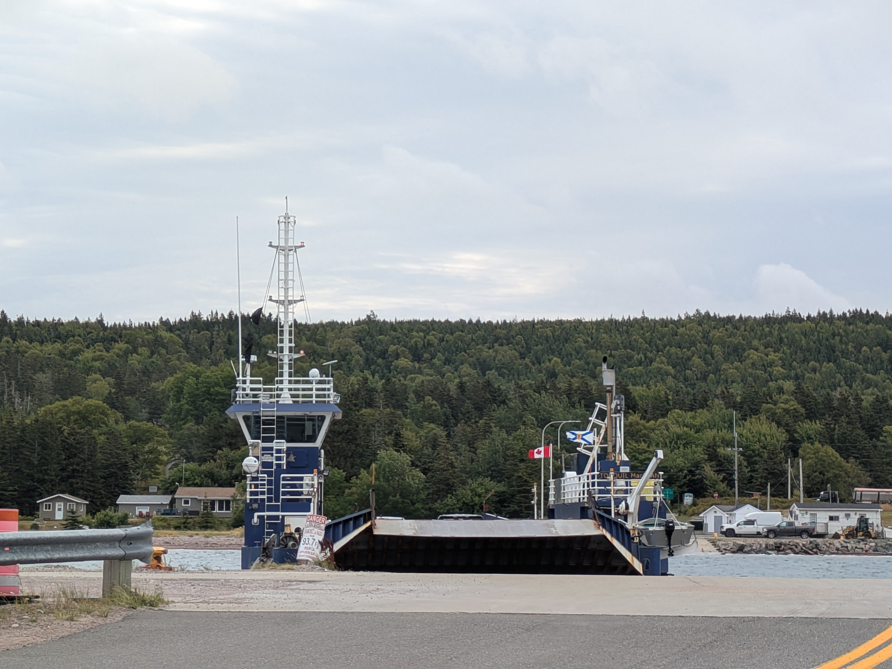
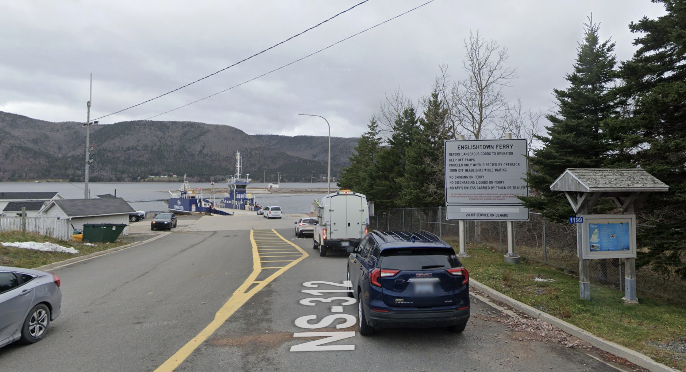
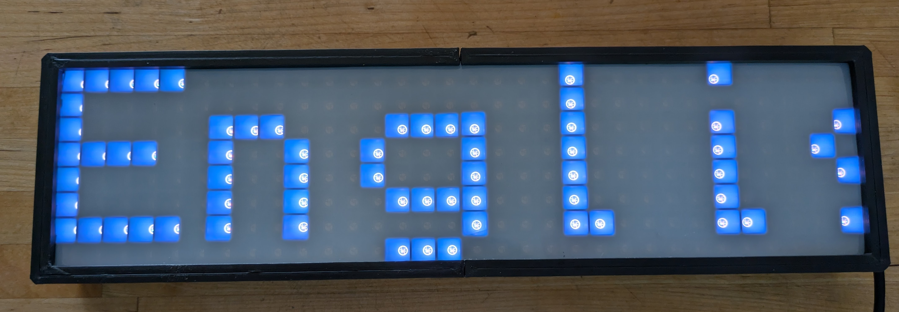
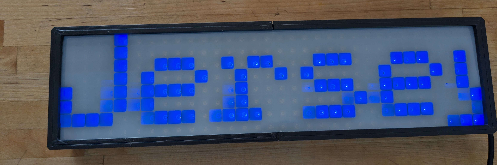
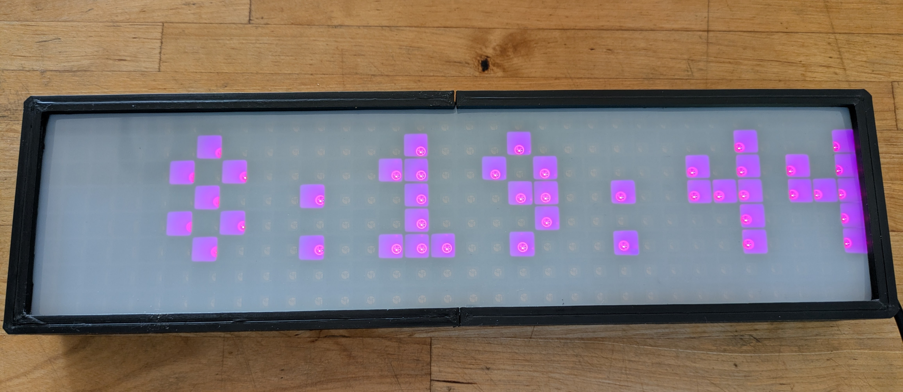
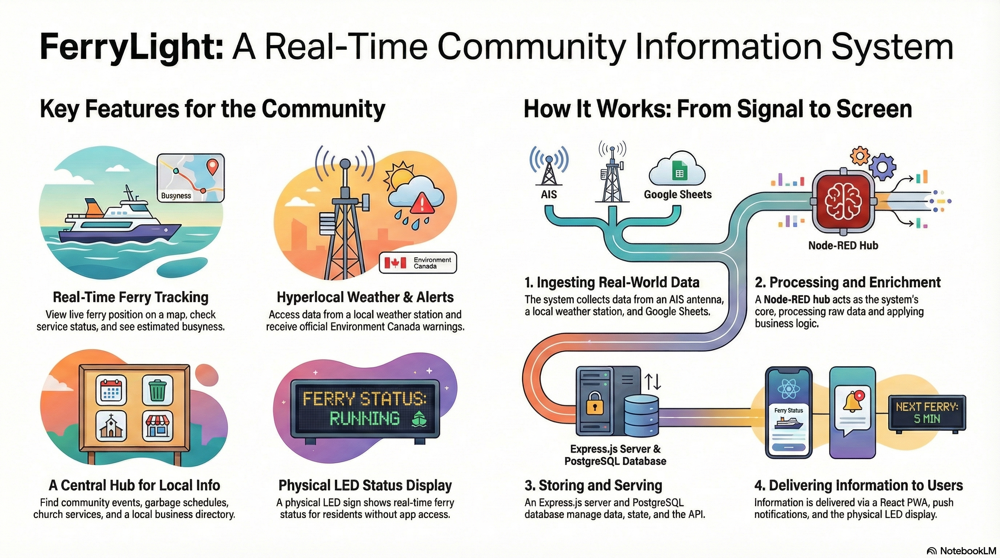

Real-time Englishtown ↔ Jersey Cove ferry tracking, DIY AIS vessel receiver, smart LED matrix displays, and community IoT hub for Victoria County, Nova Scotia.
Install firmware v0.3.29 directly in your browser with our 2-minute tabbed USB setup wizard. No software or coding required.
The cable ferry at Englishtown/Jersey Cove (vessel Torquil MacLean, MMSI 316023888) is a vital link connecting communities along Cape Breton's Cabot Trail. When the ferry is running, the crossing takes 3 to 5 minutes. But when service is suspended due to mechanical issues, tides, or high winds, travelers face an unexpected 25-minute detour via the St. Ann's Loop.
FerryLight eliminates travel uncertainty by providing automated live vessel tracking, waiting line estimations, and at-a-glance hardware LED displays for home kitchens and living rooms.



A multi-layered IoT ecosystem built with open-source technologies.
Local RTL-SDR radio receiver captures AIS signals at 161.975/162.025 MHz. Geofenced 30-meter triggers automatically calculate crossing status, dock departures, and trip counts.
WLED / ESP8266 matrix displays show ferry status, wait times, and weather alerts at a glance for seniors and residents who don't want to check a smartphone app.
On-site DIY weather station measures real-time wind speed, gusts, temperature, UV index, and integrates live Environment Canada weather warnings.
Fast, installable Progressive Web App (PWA) with smart push notifications for ferry outages, resumptions, and community announcements.
Integrates OCEARCH marine animal tagging data to track regional shark movements alongside local ADS-B air traffic in St. Ann's Bay.
Includes a "Play a Tune" feature offering curated traditional Cape Breton fiddle music to enjoy while waiting in the ferry lineup.
Custom-built 32×8 and 64×8 WS2812B matrix displays running our optimized zero-heap ESP8266 firmware.



Deep dive into the architecture, design choices, and community impact.
Listen to Markus van Kempen discuss how FerryLight was created, from radio antennas to cloud servers and LED displays.
Interactive Reveal.js presentation with system architecture slides.
Open Presentation →Download "FerryLight: A Digital Lifeline for the North Shore" document.
Download PDF →Read the complete technical specification and Node-RED data flows.
Read Specs →From RTL-SDR radio signals through Node-RED, Express.js & PostgreSQL to the PWA and LED display.
